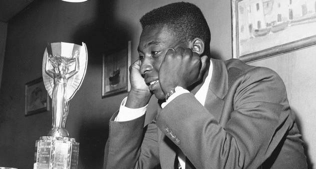

Presidente Lula anunciou nessa terça-feira, que se matriculou em uma academia

Em um evento surpreendente que deixou muitos perplexos, o presidente Luiz Inácio Lula da Silva, conhecido carinhosamente como "Lula", apareceu em público recentemente com uma aparência física impressionante.
ET Bilu Afirma Ter Visitado a Terra Novamente e Oferece Sabedoria Cósmica
Em uma reviravolta surpreendente, o enigmático ET Bilu, conhecido por suas aparições misteriosas e mensagens intrigantes, alega ter feito uma nova visita à Terra. O ET Bilu, que ganhou notoriedade nas redes sociais há alguns anos, afirma ter retornado para compartilhar sua sabedoria cósmica com a humanidade.
A Reviravolta: A Verdade sobre a Grávida de Taubaté.
Há dez anos, o Brasil e o mundo acompanharam incrédulos a história da "Grávida de Taubaté". Maria, uma mulher que morava em Taubaté, São Paulo, afirmou estar grávida de quadrigêmeos, uma notícia que chocou a nação e se tornou manchete internacional. No entanto, a história logo foi questionada, e Maria foi acusada de fingir a gravidez.
Novas Pistas Emergem sobre o Paradeiro da Taça Jules Rimet: Será o Fim do Mistério?
Um dos maiores mistérios do mundo do futebol, o roubo da Taça Jules Rimet em 1983, pode finalmente estar perto de ser resolvido. Autoridades internacionais anunciaram recentemente que novas pistas significativas surgiram, trazendo esperança de que o icônico troféu possa ser recuperado após quase quatro décadas de desaparecimento.
Maracanazo: Revelações Surpreendentes Sugerem Possível Armação na História da Copa do Mundo de 1950

Recentemente, novas alegações e revelações feitas por historiadores e investigadores esportivos lançaram uma sombra de dúvida sobre o famoso Maracanazo, um dos momentos mais icônicos da história do futebol. Essas alegações sugerem que o resultado da final da Copa do Mundo de 1950 entre Brasil e Uruguai pode ter sido influenciado por forças externas.
Messi assina contrato de 5 anos com Cruzeiro
Estou muito feliz por chegar ao Cruzeiro. É uma grande honra fazer parte da equipe de Enderson Moreira. Até breve, torcedores da Raposa, estou ansioso para jogar logo no Mineirão”, disse o atacante ao site oficial do clube. Sergio Santos Rodrigues, presidente do Cruzeiro, elogiou a nova contratação: Messi tem jogado no mais alto nível há muitos anos, então não temos dúvidas da experiência e da qualidade que ele irá trazer ao elenco